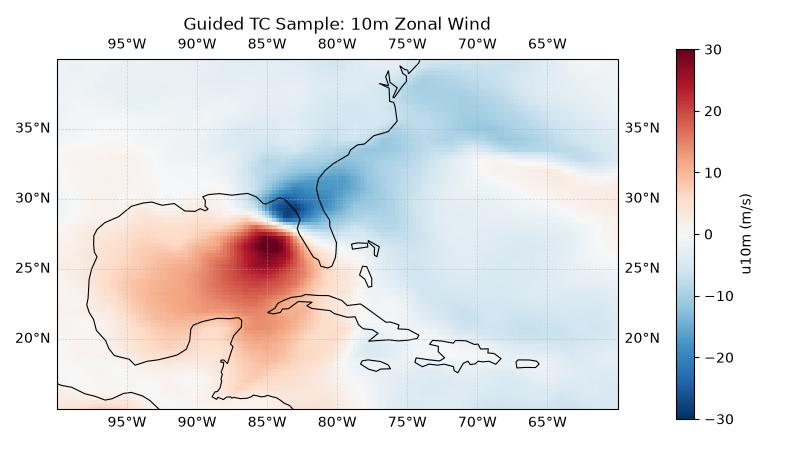
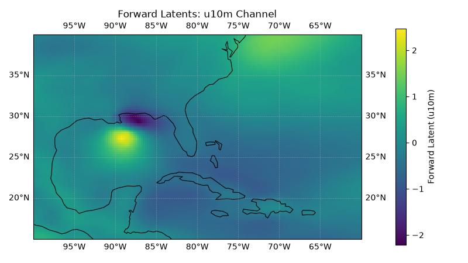

CBottle Tropical Cyclone Guidance¶
Guided tropical cyclone sampling with cBottle and odds-ratio diagnostics.
This example demonstrates the cBottle TC guidance model for generating synthetic tropical cyclone samples at user-specified locations and computing the log-odds ratio between the guided and unguided distributions. The odds ratio quantifies how much more likely a particular sample is under guidance compared to the base model.
For more information on cBottle see:
For more information on the odds ratio see:
In this example you will learn:
- Running guided TC sampling with
earth2studio.models.dx.CBottleTCGuidance - Visualizing a guided sample over a regional domain
- Reloading the model with second-order derivative support for odds-ratio computation
- Computing and interpreting the log-odds ratio of a guided sample
Set Up¶
For this example we need the cBottle TC guidance diagnostic model. We load it twice:
- Default (fast) path for standard guided sampling
- Second-order-derivative path for odds-ratio computation
Thus, we need the following:
- Diagnostic Model: Use the built in CBottle TC Guidance Model
earth2studio.models.dx.CBottleTCGuidance.
import os
os.makedirs("outputs", exist_ok=True)
from dotenv import load_dotenv
load_dotenv() # TODO: make common example prep function
from datetime import datetime
import numpy as np
import torch
from earth2studio.models.dx import CBottleTCGuidance
device = torch.device("cuda" if torch.cuda.is_available() else "cpu")
# Load the default model package which downloads the checkpoint from NGC
package = CBottleTCGuidance.load_default_package()
Guided TC Sampling (Fast Path)¶
The guidance tensor marks the location where we want TC activity. Here we place a
single guidance point near Florida and request one timestamp during hurricane season.
The fast model path (allow_second_order_derivatives=False) is optimized for
standard guided inference.
lat = torch.tensor([27.0], device=device) # Near Florida
lon = torch.tensor([-82.0], device=device) # Converted internally to [0, 360)
times = [datetime(2005, 10, 11, 12)]
model = CBottleTCGuidance.load_model(package, seed=0).to(device)
# Create guidance tensor
guidance, coords = model.create_guidance_tensor(lat, lon, times)
guidance = guidance.to(device)
# Run guided sampling
guided_sample, guided_coords = model(guidance, coords)
Post Processing Guided Sample¶
Plot the 10-metre zonal wind (u10m) over a Caribbean domain to visualize the generated tropical cyclone structure.
import cartopy.crs as ccrs
import matplotlib.pyplot as plt
plt.close("all")
variables = guided_coords["variable"]
u_var = "u10m"
u_idx = int(np.where(variables == u_var)[0][0])
# guided_sample dims: [time, lead_time, variable, lat, lon]
u = guided_sample[0, 0, u_idx].detach().cpu().numpy()
lat_coords = guided_coords["lat"]
lon_coords = guided_coords["lon"]
# Caribbean box in 0-360 longitude convention
lon_min, lon_max = 260.0, 300.0 # 100W to 60W
lat_min, lat_max = 15.0, 40.0 # 15N to 40N
lon_mask = (lon_coords >= lon_min) & (lon_coords <= lon_max)
lat_mask = (lat_coords >= lat_min) & (lat_coords <= lat_max)
u_carib = u[np.ix_(lat_mask, lon_mask)]
lat_carib = lat_coords[lat_mask]
lon_carib = lon_coords[lon_mask]
# Convert to -180..180 for plotting
lon_carib_deg = ((lon_carib + 180.0) % 360.0) - 180.0
fig, ax = plt.subplots(subplot_kw={"projection": ccrs.PlateCarree()}, figsize=(8, 4.5))
pcm = ax.pcolormesh(
lon_carib_deg,
lat_carib,
u_carib,
shading="auto",
cmap="RdBu_r",
vmin=-30,
vmax=30,
transform=ccrs.PlateCarree(),
)
ax.set_extent([-100.0, -60.0, lat_min, lat_max], crs=ccrs.PlateCarree())
ax.coastlines(resolution="110m", linewidth=0.8)
ax.gridlines(draw_labels=True, linewidth=0.5, alpha=0.5, linestyle="--")
plt.colorbar(pcm, ax=ax, label=f"{u_var} (m/s)", pad=0.08, shrink=0.92)
ax.set_title("Guided TC Sample: 10m Zonal Wind")
plt.tight_layout()
plt.savefig("outputs/05_cbottle_tc_guided_sample.jpg")

Computing the Odds Ratio¶
The odds ratio requires computing Hutchinson divergence terms that need second-order
derivatives through the model. We reload with allow_second_order_derivatives=True
for odds ratio calculations.
Note: sampler_steps is also reduced in this section to speed up runtime. Use
the default sampler settings for improved quality and more stable odds-ratio values.
model = CBottleTCGuidance.load_model(
package,
seed=0,
sampler_steps=2,
allow_second_order_derivatives=True,
).to(device)
log_odds_ratio, forward_latents, latent_coords = model.calculate_odds_ratio(
guidance,
coords,
)
print(f"Log odds ratio: {log_odds_ratio:.4f}")
print(f"Forward latents shape: {tuple(forward_latents.shape)}")
Console output89 lines
calculate_odds_ratio[forward]: 0%| | 0/27 [00:00<?, ?it/s]
calculate_odds_ratio[forward]: 4%|▎ | 1/27 [00:00<00:25, 1.01it/s]
calculate_odds_ratio[forward]: 7%|▋ | 2/27 [00:01<00:24, 1.04it/s]
calculate_odds_ratio[forward]: 11%|█ | 3/27 [00:02<00:23, 1.04it/s]
calculate_odds_ratio[forward]: 15%|█▍ | 4/27 [00:03<00:21, 1.05it/s]
calculate_odds_ratio[forward]: 19%|█▊ | 5/27 [00:04<00:20, 1.05it/s]
calculate_odds_ratio[forward]: 22%|██▏ | 6/27 [00:05<00:19, 1.06it/s]
calculate_odds_ratio[forward]: 26%|██▌ | 7/27 [00:06<00:18, 1.06it/s]
calculate_odds_ratio[forward]: 30%|██▉ | 8/27 [00:07<00:17, 1.07it/s]
calculate_odds_ratio[forward]: 33%|███▎ | 9/27 [00:08<00:16, 1.07it/s]
calculate_odds_ratio[forward]: 37%|███▋ | 10/27 [00:09<00:17, 1.03s/it]
calculate_odds_ratio[forward]: 41%|████ | 11/27 [00:10<00:15, 1.00it/s]
calculate_odds_ratio[forward]: 44%|████▍ | 12/27 [00:11<00:14, 1.02it/s]
calculate_odds_ratio[forward]: 48%|████▊ | 13/27 [00:12<00:13, 1.04it/s]
calculate_odds_ratio[forward]: 52%|█████▏ | 14/27 [00:13<00:12, 1.05it/s]
calculate_odds_ratio[forward]: 56%|█████▌ | 15/27 [00:14<00:11, 1.06it/s]
calculate_odds_ratio[forward]: 59%|█████▉ | 16/27 [00:15<00:10, 1.06it/s]
calculate_odds_ratio[forward]: 63%|██████▎ | 17/27 [00:16<00:09, 1.06it/s]
calculate_odds_ratio[forward]: 67%|██████▋ | 18/27 [00:17<00:08, 1.06it/s]
calculate_odds_ratio[forward]: 70%|███████ | 19/27 [00:18<00:07, 1.06it/s]
calculate_odds_ratio[forward]: 74%|███████▍ | 20/27 [00:19<00:06, 1.06it/s]
calculate_odds_ratio[forward]: 78%|███████▊ | 21/27 [00:20<00:05, 1.05it/s]
calculate_odds_ratio[forward]: 81%|████████▏ | 22/27 [00:20<00:04, 1.06it/s]
calculate_odds_ratio[forward]: 85%|████████▌ | 23/27 [00:21<00:03, 1.06it/s]
calculate_odds_ratio[forward]: 89%|████████▉ | 24/27 [00:23<00:03, 1.03s/it]
calculate_odds_ratio[forward]: 93%|█████████▎| 25/27 [00:24<00:02, 1.00s/it]
calculate_odds_ratio[forward]: 96%|█████████▋| 26/27 [00:25<00:00, 1.01it/s]
calculate_odds_ratio[forward]: 100%|██████████| 27/27 [00:25<00:00, 1.03it/s]
calculate_odds_ratio[backward]: 0%| | 0/26 [00:00<?, ?it/s]
calculate_odds_ratio[backward]: 4%|▍ | 1/26 [00:05<02:07, 5.08s/it]
calculate_odds_ratio[backward]: 8%|▊ | 2/26 [00:09<01:59, 4.97s/it]
calculate_odds_ratio[backward]: 12%|█▏ | 3/26 [00:16<02:13, 5.82s/it]
calculate_odds_ratio[backward]: 15%|█▌ | 4/26 [00:23<02:15, 6.18s/it]
calculate_odds_ratio[backward]: 19%|█▉ | 5/26 [00:30<02:13, 6.37s/it]
calculate_odds_ratio[backward]: 23%|██▎ | 6/26 [00:36<02:09, 6.49s/it]
calculate_odds_ratio[backward]: 27%|██▋ | 7/26 [00:43<02:04, 6.57s/it]
calculate_odds_ratio[backward]: 31%|███ | 8/26 [00:50<02:00, 6.72s/it]
calculate_odds_ratio[backward]: 35%|███▍ | 9/26 [00:57<01:54, 6.73s/it]
calculate_odds_ratio[backward]: 38%|███▊ | 10/26 [01:04<01:47, 6.73s/it]
calculate_odds_ratio[backward]: 42%|████▏ | 11/26 [01:10<01:40, 6.73s/it]
calculate_odds_ratio[backward]: 46%|████▌ | 12/26 [01:17<01:34, 6.72s/it]
calculate_odds_ratio[backward]: 50%|█████ | 13/26 [01:24<01:27, 6.72s/it]
calculate_odds_ratio[backward]: 54%|█████▍ | 14/26 [01:31<01:20, 6.73s/it]
calculate_odds_ratio[backward]: 58%|█████▊ | 15/26 [01:37<01:13, 6.73s/it]
calculate_odds_ratio[backward]: 62%|██████▏ | 16/26 [01:44<01:07, 6.72s/it]
calculate_odds_ratio[backward]: 65%|██████▌ | 17/26 [01:51<01:00, 6.71s/it]
calculate_odds_ratio[backward]: 69%|██████▉ | 18/26 [01:57<00:53, 6.72s/it]
calculate_odds_ratio[backward]: 73%|███████▎ | 19/26 [02:05<00:47, 6.81s/it]
calculate_odds_ratio[backward]: 77%|███████▋ | 20/26 [02:11<00:40, 6.79s/it]
calculate_odds_ratio[backward]: 81%|████████ | 21/26 [02:18<00:33, 6.79s/it]
calculate_odds_ratio[backward]: 85%|████████▍ | 22/26 [02:25<00:27, 6.78s/it]
calculate_odds_ratio[backward]: 88%|████████▊ | 23/26 [02:32<00:20, 6.76s/it]
calculate_odds_ratio[backward]: 92%|█████████▏| 24/26 [02:38<00:13, 6.77s/it]
calculate_odds_ratio[backward]: 96%|█████████▌| 25/26 [02:45<00:06, 6.77s/it]
calculate_odds_ratio[backward]: 100%|██████████| 26/26 [02:50<00:00, 6.19s/it]
calculate_odds_ratio[backward_no_guidance]: 0%| | 0/26 [00:00<?, ?it/s]
calculate_odds_ratio[backward_no_guidance]: 4%|▍ | 1/26 [00:04<01:49, 4.37s/it]
calculate_odds_ratio[backward_no_guidance]: 8%|▊ | 2/26 [00:08<01:44, 4.37s/it]
calculate_odds_ratio[backward_no_guidance]: 12%|█▏ | 3/26 [00:13<01:40, 4.38s/it]
calculate_odds_ratio[backward_no_guidance]: 15%|█▌ | 4/26 [00:17<01:36, 4.37s/it]
calculate_odds_ratio[backward_no_guidance]: 19%|█▉ | 5/26 [00:22<01:33, 4.47s/it]
calculate_odds_ratio[backward_no_guidance]: 23%|██▎ | 6/26 [00:26<01:28, 4.43s/it]
calculate_odds_ratio[backward_no_guidance]: 27%|██▋ | 7/26 [00:30<01:23, 4.41s/it]
calculate_odds_ratio[backward_no_guidance]: 31%|███ | 8/26 [00:35<01:19, 4.41s/it]
calculate_odds_ratio[backward_no_guidance]: 35%|███▍ | 9/26 [00:39<01:14, 4.40s/it]
calculate_odds_ratio[backward_no_guidance]: 38%|███▊ | 10/26 [00:44<01:10, 4.39s/it]
calculate_odds_ratio[backward_no_guidance]: 42%|████▏ | 11/26 [00:48<01:05, 4.39s/it]
calculate_odds_ratio[backward_no_guidance]: 46%|████▌ | 12/26 [00:52<01:01, 4.39s/it]
calculate_odds_ratio[backward_no_guidance]: 50%|█████ | 13/26 [00:57<00:57, 4.39s/it]
calculate_odds_ratio[backward_no_guidance]: 54%|█████▍ | 14/26 [01:01<00:52, 4.38s/it]
calculate_odds_ratio[backward_no_guidance]: 58%|█████▊ | 15/26 [01:05<00:48, 4.39s/it]
calculate_odds_ratio[backward_no_guidance]: 62%|██████▏ | 16/26 [01:10<00:43, 4.39s/it]
calculate_odds_ratio[backward_no_guidance]: 65%|██████▌ | 17/26 [01:14<00:39, 4.41s/it]
calculate_odds_ratio[backward_no_guidance]: 69%|██████▉ | 18/26 [01:19<00:35, 4.48s/it]
calculate_odds_ratio[backward_no_guidance]: 73%|███████▎ | 19/26 [01:23<00:31, 4.46s/it]
calculate_odds_ratio[backward_no_guidance]: 77%|███████▋ | 20/26 [01:28<00:26, 4.43s/it]
calculate_odds_ratio[backward_no_guidance]: 81%|████████ | 21/26 [01:32<00:22, 4.42s/it]
calculate_odds_ratio[backward_no_guidance]: 85%|████████▍ | 22/26 [01:37<00:17, 4.41s/it]
calculate_odds_ratio[backward_no_guidance]: 88%|████████▊ | 23/26 [01:41<00:13, 4.41s/it]
calculate_odds_ratio[backward_no_guidance]: 92%|█████████▏| 24/26 [01:45<00:08, 4.40s/it]
calculate_odds_ratio[backward_no_guidance]: 96%|█████████▌| 25/26 [01:50<00:04, 4.40s/it]
calculate_odds_ratio[backward_no_guidance]: 100%|██████████| 26/26 [01:54<00:00, 4.40s/it]
Log odds ratio: -4.5933
Forward latents shape: (1, 45, 721, 1440)Post Processing Forward Latents¶
The forward_latents tensor is returned on the same grid as the model output
(lat-lon when lat_lon=True). We visualize a single channel (u10m) over the same
Caribbean domain. This shows the latent-space representation that the odds-ratio
computation operates on.
plt.close("all")
# Identify the u10m channel in output variable ordering
latent_variables = latent_coords["variable"]
u_latent_idx = int(np.where(latent_variables == u_var)[0][0])
latent_u = forward_latents[0, u_latent_idx].detach().cpu().numpy()
latent_u_carib = latent_u[np.ix_(lat_mask, lon_mask)]
fig, ax = plt.subplots(subplot_kw={"projection": ccrs.PlateCarree()}, figsize=(8, 4.5))
pcm = ax.pcolormesh(
lon_carib_deg,
lat_carib,
latent_u_carib,
shading="auto",
cmap="viridis",
transform=ccrs.PlateCarree(),
)
ax.set_extent([-100.0, -60.0, lat_min, lat_max], crs=ccrs.PlateCarree())
ax.coastlines(resolution="110m", linewidth=0.8)
ax.gridlines(draw_labels=True, linewidth=0.5, alpha=0.5, linestyle="--")
plt.colorbar(pcm, ax=ax, label=f"Forward Latent ({u_var})", pad=0.08, shrink=0.92)
ax.set_title(f"Forward Latents: {u_var} Channel")
plt.tight_layout()
plt.savefig("outputs/05_cbottle_tc_forward_latents.jpg")
